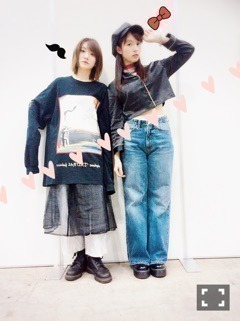
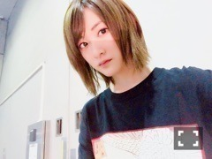

| 2016/10 27 Thu | この日常が非日常。 |
生駒です〜ヽ(・∀・)ノ
何故か毎日バタバタしています。
毎日何かしらあるのは素晴らしい事ですがね、
アニメが観れていない現実ね、
やばいよ。
2次元に浸りたいです。
16枚目シングル
サヨナラの意味
選抜に選んで頂きました。
ありがとうございます！
私は今は、
乃木坂を支えるひとなのかなと思います。
フォローの達人になりたいです

でも、モバメに送ったあの内容。
絶対秘密にしてね？
モバメを取って下さっているツワモノの皆さんには知ってて欲しいからこの気持ち。
闘志はメラメラって事ですヽ(・∀・)ノ
どうぞ16枚目も
乃木坂を、生駒ちゃんをよろしくお願い申し上げます
ななみんの卒業。
まだ、卒業した訳ではないからね。
ななみんが決めた事だから、
ななみんが乃木坂46を去るその日まで、
ななみんが楽しい毎日が送れるようにと願います。
大人数アイドルだからこそ、
卒業がすごくとりあげられますが、
人生生きていたら、
誰しもが一度は経験する卒業です。
私は今、橋本奈々未という女性の人生の
きっと人生で濃く印象に残る卒業に携わる事が出来ます。
それはすごく自分にとっても大きな事になるのだろうな。
今まで乃木坂を巣立ったみんながそうであったから。
こんなにバラバラに生きてきた人間が同じものを作る人生を送り、
そこから去るまでを過ごす。
よく考えたらすごい事だなぁ。
世の中ってすごいな


そうそう、
この前のパシフィコ横浜にて開催された個別握手会に来てくださった皆さんありがとうございました
このひめの私服は帽子から靴まで生駒ちゃんが選ばせて頂きました(*´꒳`*)
こんなひめはどうでしたかねひめきゅんさん？
ひめとは意外と仲良しこよしなのよ

29日の握手会は何を着ようかしら。。
あ、16枚目の握手会も是非申し込んで下さいね
今の生駒ちゃん大人になったって好評なんですよ笑
よくそんな内容でモデルプレスさん記事にしてくださったのか。。
いやはやありがたきありがたき。
ま、生駒ちゃんおすすめみたいですよ笑
明日は日テレハロウィンLive
楽しみましょう


へばなっ☆彡
コメント(587)
2016/10/27 21:48